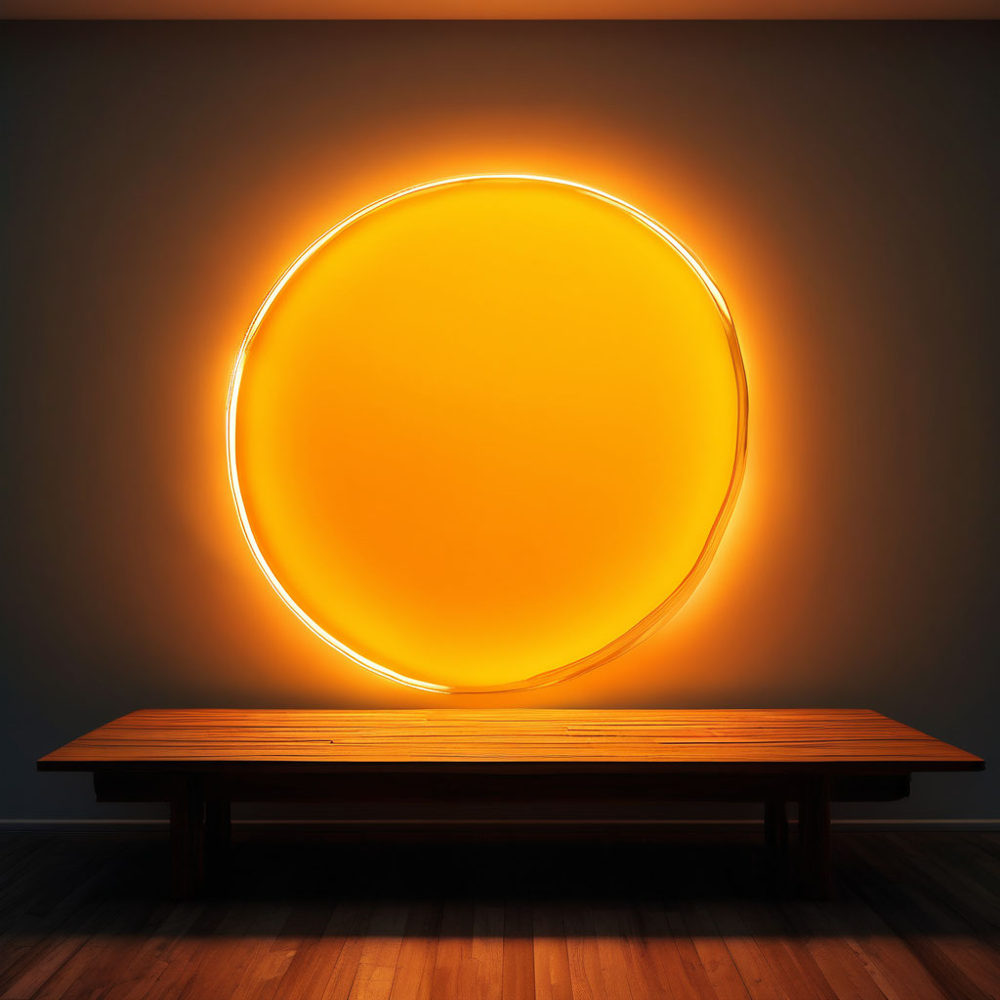

Мантра Будды Медицины

Описание:
Техника «Мантра Будды Медицины» помогает улучшать кровообращение, нормализовать сон, укреплять иммунитет и справляться со стрессом и улучшать концентрацию.
Категория техники:
Состояния
Время:
10 минут
Зачем:
Предлагаемая техника, через практический опыт, способствует улучшению кровообращения, восстановлению артериального давления, нормализации сна. Регулярное выполнение техники улучшает сопротивляемость организма стрессовым ситуациям и укрепляет иммунитет. Использовать ее может любой желающий — как для преодоления стресса, так и для улучшения концентрации, поддержания хорошего самочувствия.
Как это работает:
Техника хорошо интегрируется в ваши ежедневные практики и ритуалы, например, можно выполнять ее после/до физической зарядки с утра (посмотрите, как вам будет комфортнее — проснуться с помощью этой практики и потом перейти к физическим упражнениям, или наоборот).
Алгоритм выполнения:
-
Стадия выравнивания/очищения Убедитесь, что помещение, где вы собираетесь выполнять технику, хорошо проветрено, но ваше место не расположено на сквозняке. Постарайтесь найти уединенное место в доме (на природе, если это теплое время года) или попросите ваших близких не беспокоить вас во время практики. Не рекомендуется накануне выполнения техники принимать острую пищу/пить алкоголь.
-
Сядьте с прямой спиной на стул, опустите ноги на пол, почувствуйте ступнями пол (обувь лучше снять). Если позволяет гибкость и вы практикуете позу лотоса, рекомендуем сесть в позу лотоса/полулотоса (у вас не должно возникать болевых ощущений в коленях и дискомфорта в спине). Важно держать спину прямой: это освобождает легкие, позволяя воздуху (Ветру, как считается в тибетской медицине) циркулировать и открывать многочисленные энергетические каналы в теле.
-
Прикройте глаза. Сделайте несколько ровных вдохов и выдохов. С каждым вдохом медленнее выпускайте воздух на выдохе. Это позволит вам выровнять дыхание и замедлить сердцебиение. Рекомендуемая длительность этого шага — 3–4 минуты. Для выполнения техники необходимо замедление. Почувствуйте, как с каждым выдохом вы отпускаете суету дня. Наблюдайте со стороны свои мысли, позволяя им течь своим чередом, как поток реки, при этом не вовлекаясь и не входя в это течение. Следующая часть техники является трехэтапной практикой очищения и является предваряющей к выполнению Мантры Будды Медицины. Очищение ума
-
Визуализируйте в центре своей головы слог ОМ, он излучает белое, чистое свечение. Вы можете представить этот слог в виде белых сияющих букв О и М либо в виде сияющего белого шара энергии, который парит в пустом пространстве (как бы внутри вашей головы). Понаблюдайте за ним.
-
Сделайте вдох и на выдохе начинайте тянуть звук О (в той тональности и тем звуком, который вы сейчас ближе всего ощущаете; звук вашего голоса может сейчас оказаться ниже или выше, чем ваш обычный голос, не пугайтесь, просто выдыхайте и продолжайте пропевать звук О). Как только вы почувствуете, что выдох закончился где-то на 2/3, прикройте рот и перейдите к звучанию на звуке М (продолжая выдох). Звук пойдет в резонаторы головы, от этого у вас может появиться ощущение вибрации в голове. Когда выдох закончится, сделайте небольшую паузу. Повторяйте шаги 3 и 4 с визуализацией в течение нескольких минут (3–4), постепенно расширяя визуализацию и распространяя ее из белого свечения в голове на все тело. Представляйте, что белый свет, проходя сквозь ваше тело, очищает его. С ним уходят все негативные мысли и настрой, остается белое чистое свечение. Дышите, с дыханием повторяйте слог ОМ согласно шагу 4. Белая чистая энергия в данном случае в традиции буддизма считается энергией всех Будд и Бодхисаттв — чистых существ, очищающих собой все негативное в мире. После того как вы перестанете издавать звук ОМ, ничего не делайте, не вставайте. Не думайте ни о чем. Побудьте в неподвижности, без представлений о добре или зле, без реакций, привязок, без внутреннего диалога, все внимание направьте на свет в середине своей головы. Оставайтесь в покое и в вибрациях от произнесенных звуков. Постарайтесь не засыпать. Оставайтесь в покое, но в бодрости. чищение речи (гортани, или «горловой чакры»)
-
Визуализируйте красный звук А в середине вашего горла. Солнечный свет прогревает и очищает вашу речь. Все произнесенное и непроизнесенное. Очищение подразумевает, что бесконтрольные ум и речь действуют во взаимозависимости. Вы можете представить, что отпечатки совершенных вами «неблагих деяний» в речи полностью очищаются этим созидающим красным светом.
-
На выдохе начинайте произносить звук А. Открытый и чистый звук А, почувствуйте, что к красному свечению в горле присоединяются теплые вибрации звука. Произнося звук А, концентрируйтесь на ощущениях в горле и гортани. Если возникают бесконтрольные мысли и отвлечения, буддийские практики рекомендуют вспомнить, что в такой ситуации находитесь не только вы, но и все остальные живые существа, — и потому полезно вспомнить о любящей доброте по отношению к другим. Повторяйте звучание «А» на выдохе 3–5 минут, сохраняя визуализацию красного цвета в гортани. Очищение Сердца
-
Представьте, что в вашем сердце, на диске полной луны, находится сияющий синий слог ХУНГ. В буддизме считают, что этот синий слог — проявление недвойственной мудрости всех Будд и Бодхисаттв. Почувствуйте, что ваше сердце чисто, ясно и спокойно; его раскрывает сияющий синий свет слога ХУНГ. Все ограничивающие вас мысли исчезают; любая нерешительность исчезает; все навязчивые склонности уходят. Синий цвет также является символом Будды Медицины (традиционные тханка часто изображают фигуру Будды Медицины именно синего цвета) и связан со второй частью нашей практики.
-
Сделайте спокойный вдох и на выдохе начинайте произносить слог ХУНГ. Позвольте звуку У свободно течь и, когда вы почувствуете, что осталось примерно 1/3 выдоха, закрывайте звук НГ, и отправляйте его в носовые резонаторы и в головные резонаторы. Осторожно попробуйте направить звук в теменную область головы. Медленно вдыхайте и снова произносите слог ХУНГ. Почувствуйте, как звук полностью наполняет ваше тело. Все ваше тело ощущает радостное спокойствие. Визуализируя синий свет с источником в сердце, продолжайте произносить звук ХУНГ еще 2–3 минуты. Затем ощутите, что синий свет, подобный вашему сознанию, охватывает собой все пространство. Ваша осознанность распространяется на него. Пребывайте в свободе от ожиданий или предрассудков и ощущайте это. Оставайтесь в позе лотоса (сидите на стуле с прямой спиной), после того как закончили произносить слог ХУНГ еще 3–4 минуты. Если вы можете посвятить технике в день только 15–20 минут, можно закончить ее выполнение после шага 8. Если вы выполняете практику в связке с физическими упражнениями, рекомендуется, до того как говорить с людьми, дополнительно почистить зубы и прополоскать рот. В случае, если вы располагаете большим временем, рекомендуем продолжить технику и перейти к следующей части — Мантре Будды Медицины.
-
Поместите текст перед глазами. Возможно, вам будет необходимо повторить его несколько раз до того, как запомнить. Произносите мантру в своем темпе. Не торопитесь. Тейята Ом Беканзе Беканзе Маха Беканзе Рандза Самудгате Соха (Общий подстрочник мантры может звучать как: «Так Целитель, Целитель, о Великий Целитель, Царь Исцеления, Славься».) Визуализацию на эту часть практик делать не нужно. Достаточно просто произносить мантру. В данном случае многократное повторение (как рекомендовано в Будда Медицине — не менее 108 раз) гармонизирует и выравнивает состояние и в целом, как считают буддисты, приносит улучшение самочувствия. После практики рекомендуется умыть лицо и какое-то время не делать резких движений.
Дополнительные упражнения:
- Гамкрелидзе Т. В. Индоевропейский язык и индоевропейцы. — Тбилиси: Изд-во Тбилис. ун-та, 1984.
- Гамкрелидзе Т. В. Индоевропейский язык и индоевропейцы. Реконструкция и историко-типологический анализ праязыка и протокультуры. — Тбилиси: Изд-во Тбилис. ун-та, 1984.
- Гуваков В. И. Введение в культуру буддийской философии. Материалы к лекциям. — Новосибирск: НГУ, 2000.
- Кочергина В. А. Санскритско-русский словарь. — М.: Русский язык, 1987.
- Лама Йеше. Женева, Швейцария. Веб-публикация: https://www.lamayeshe.com/ [05.07.2020].
- Петренко В. Ф. Психологические аспекты медитации // Вестник Московского университета. Серия Психология. — 2008. — № 1.
- Ченагцанг, Нида. Йога звука. Лечение мантрами в тибетской медицине. — М.: Ганга, 2019.
- Ченагцанг, Нида. Путь к радужному телу. Введение в Юток Нинтик. — М.: Ганга, 2019.
- Frits Staal. Rules Without Meaning. Ritual, Mantras and the Human Sciences. — New York–Bern-Frankfurt am Main-Paris: Peter Lang 1989.
- Frits Staal. Rules Without Meaning. Ritual, Mantras and the Human Sciences, Peter Lang. — N.Y.–Bern–Frankfurt am Main-Paris, 1989.
- Медитация на Будду медицины была дана Лопеном Цечу Ринпоче (1997) по просьбе Ламы Оле Нидала.
- Максимов Артем. Тибетская медицина. Диагностика заболеваний, лечебные ванны, массажи, прогревания, рефлексотерапия. — Харьков: Клуб семейного досуга, 2019.
- Петренко В. Ф., Кучеренко В. В. Психологические аспекты медитации (1-я часть). Точки Отсчета. — М.: Агни-Йога, Новый мир, 2018.
- Кочергина В. А. Санскритско-русский словарь / Под ред. В. И. Кальянова; с приложением «Грамматического очерка санскрита» А. А. Зализняка. 2-е изд., испр. и доп. — М.: Русский язык, 1987.
- Психологос. Визуализация. Веб-публикация: https://www.psychologos.ru/articles/view/vizualizaciya.